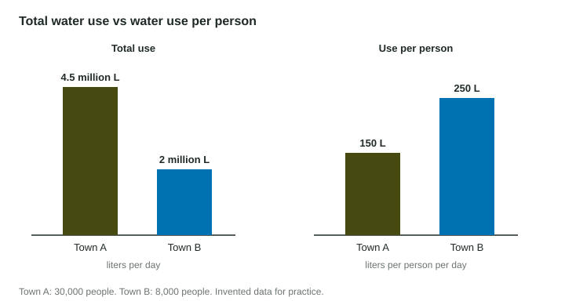

Environmental data comes as totals: a city uses 4.5 million liters of water a day, a country emits 5 billion metric tons of carbon dioxide a year. Totals alone cannot tell you whether a place uses resources heavily, because a big total might just mean many people. Rates fix that. This chapter shows how to build a rate, how to read "per", and how to keep the units straight.
What a rate is
A rate compares two quantities measured in different units by dividing one by the other: liters per day, kilometers per hour, people per square kilometer. A unit rate is the rate for exactly one of the second quantity: 150 liters per 1 person, written 150 L/person.
The word "per" means "divided by", and the quantity after it goes on the bottom. "Liters per kilometer" is . "Kilometers per liter" is . They are different numbers, so read the question twice.
Per capita
Per capita means per person. Divide a total by the population.

Worked example. Town A has 30,000 people and uses 4,500,000 L of water a day. Town B has 8,000 people and uses 2,000,000 L a day. Which uses more per person?
Town A setup:
Town B setup:
Town A uses more in total; Town B uses more per person. The per-capita value is the fair comparison.
Density and rates over time
| Kind of rate | Divide | Example |
|---|---|---|
| Per capita | total ÷ people | 4,500,000 L ÷ 30,000 people = 150 L/person |
| Density | count ÷ area | 400,000 people ÷ 2,500 km² = 160 people/km² |
| Rate of change | change ÷ time | 36 cm ÷ 12 weeks = 3 cm/week |
| Use per distance | amount ÷ distance | 1,200 L ÷ 15,000 km = 0.08 L/km |
Write the setup with units
On the exam, the setup earns its own point. Write the numbers with their units as a fraction, then the answer with its unit:
Worked example. A car used 1,200 L of gasoline in 15,000 km. Find the fuel used per km.
Setup:
Answer: L/km. If you had divided the other way you would get 12.5 km/L, a correct number for a different question; the units tell you which one you found.
If the numbers come in different units, convert first. A school of 800 students wastes 2.4 metric tons of food a month. Change 2.4 metric tons to 2,400 kg, then
Check that it makes sense
- Per-person water use in a town should be tens to a few hundred liters a day, not millions.
- If your answer is tiny when you expected something large, you probably divided upside down.
- Totals reflect size; rates reflect behavior. A headline that calls the biggest city "the most wasteful" may be wrong once you divide by population.